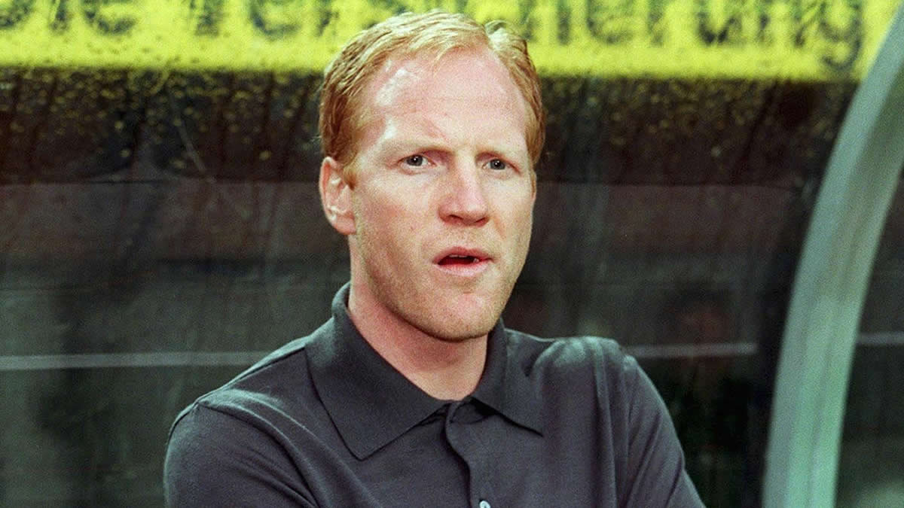
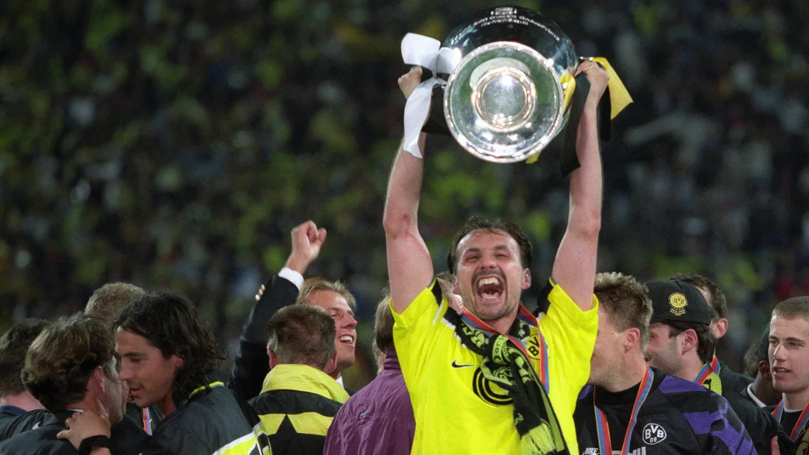

Club Legends
There are many people who have done extraordinary things for Borussia Dortmund and therefore have become Club Legends and icons for everybody inside the club and a lot of times outside the club too. These are the most iconic people for Borussia Dortmund due to their passion and actions for the club:
- Matthias Sammer
- Juergen Kohler
- Michael Zorc
- Manfred Burgsmueller
- Lars Ricken
There are many more true club legends to mention and incredible stories to tell, yet I will focus on the three most iconic people to Borussia Dortmund in more detail.
Matthias Sammer
Sammer joined Borussia Dortmund from Inter Milan in 1993.
In 1996 he capped off those tremendous consecutive Bundesliga titles by being named the European Footballer
of the Year and winning the European Championship with Germany.
He then went on to win the Champions League with Dortmund the following season.
In 2000, two years after retiring due to injury, he became Dortmund’s manager. He then led them to another
Bundesliga title and reached the UEFA Cup final in 2002.
He is currently employed as the technical director of the German FA and works closely with national team
coach Joachim Löw.
With his success at international and club level, as well as being the only Dortmund player to have won the
Ballon d’Or, Matthais Sammer
truly deserves to head up this list of past Borussia Dortmund greats.
Juergen Kohler
An outstanding centre back, Kohler was capped by his country 105 times, winning the World Cup in 1990 and the European Championship in 1996 alongside Reuter and Möller. Kohler signed for Dortmund in 1995, remaining at the club until retiring from professional football seven years later. During this time he won four major club trophies, in addition to four others he had previously won in both Germany and Italy. Despite his success, his career ended in a rather negative fashion, being sent off in his last ever game as Dortmund lost the UEFA Cup final.
Michael Zorc

Another Borussia Dortmund record holder, Michael Zorc has made more appearances for the club than any other player. Another one club man, Zorc notched up almost 600 appearances for BVB 1981 and 1998. The team captain, and an excellent penalty taker, he scored 155 goals in this time. Although never successful on the international stage, his playing career saw him win the Champions League, back-to-back Bundesliga titles, the DFB-Pokal cup and the Intercontinental Cup. Still a fan favourite, he was again involved with the club as they won the Bundesliga last season, this time as general manager.
What all these legends and people who are of unmeasurable importance to the club connects is that they are truly embracing BVB as a culture and not just as a club. It is not just a place where you play sports and then you are done with it. The whole culture, the people, the management, and the city of Dortmund embrace being part of Borussia Dortmund. Once a part of this club, you are forever part of it.
It is indeed True Love.